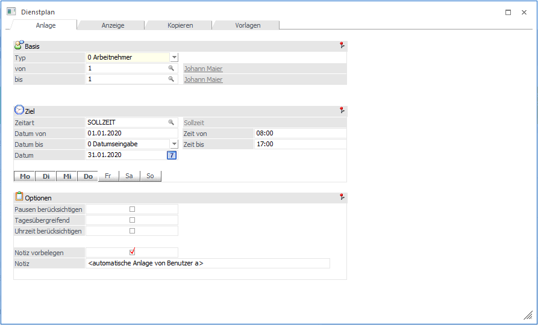
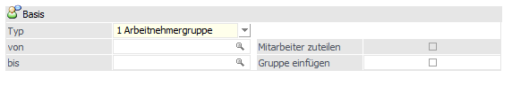
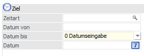
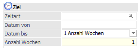
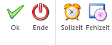
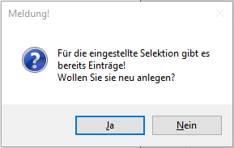
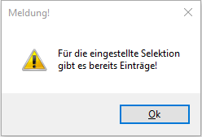

Im Register "Anlage" kann man mehrere Dienstpläne für Arbeitnehmer oder Arbeitnehmergruppen anlegen.

Basis
Ø Typ
Ø von - bis
Über eine Auswahllistbox kann zwischen Arbeitnehmern und Arbeitnehmergruppen ausgewählt werden. Je nachdem kann eine von - bis Selektion eingeben werden.
Hinweis
Wenn als Basis Arbeitnehmergruppen ausgewählt wurde, stehen noch folgende Optionen zur Auswahl:

ü Gruppe einfügen
Mit dieser
Option wird nur ein Eintrag für die Arbeitnehmergruppen geschrieben, ist die
Checkbox deaktiviert, werden die Sollzeiten für alle Arbeitnehmer der
Arbeitnehmergruppe angelegt.
ü Mitarbeiter zuteilen
Diese
Option steht nur zur Verfügung, wenn die Checkbox "Gruppe einfügen" aktiviert
ist. Ist diese Option gesetzt, werden zusätzlich zur Arbeitnehmergruppe die
Sollzeiten für alle Arbeitnehmer der Arbeitnehmergruppe geschrieben.
Ziel
Ø Zeitart
Eingabe einer Zeitart mit dem Typ "Sollzeit". Dazu steht der Matchcode zur Verfügung.
Ø Datum von
Eingabe eines Startdatums, ab wann die Sollzeiten angelegt werden sollen.
Ø Datum bis
Beim Zieldatum kann zwischen folgenden Optionen gewählt werden:
ü 0 Datumseingabe
Bei dieser
Option kann unter dem Feld "Datum" ein Zieldatum eingetragen werden, auf welches
die Sollzeiten angelegt werden sollen.

ü 1 Anzahl Wochen
Bei dieser
Option erfolgt unter dem Feld "Anzahl Wochen" die Eingabe der Anzahl der Wochen
bis auf welche die Sollzeiten angelegt werden sollen.

Ø Datum/Anzahl Wochen
Je nachdem was als Zieldatum ausgewählt worden ist, kann hier entweder ein Datum oder die Anzahl der Wochen eingetragen werden.
Ø Zeit von / bis
Eingabe der gewünschten Uhrzeit.
Ø Wochentage
Mithilfe der Buttons MO - SO könnend die Wochentage selektiert bzw. deselektiert werden für welche die Sollzeiten angelegt werden sollen.
Beispiel
Es sollen die Sollzeiten für die Wochentage MO bis FR angelegt werden.
Optionen
Ø Pausen berücksichtigen
Über diese Checkbox kann gesteuert werden, dass die Pausen aus dem Arbeitszeitmodell bei der Anlage der Sollzeiten berücksichtigt werden. Wenn diese Option gesetzt ist, werden die Sollzeiten um die Pause gekürzt und aufgeteilt.
Beispiel
Es wird als Sollzeit 8:00-17:30 eingegeben. Wenn die Checkbox aktiviert ist, wird der Pausenstamm aus dem Arbeitszeitmodell geladen. Dort ist z.B.: eine Pause von 12:00-13:00 eingetragen, so wird die Sollzeit auf 8:00-12:00 und 13:00-17:30 geändert und die entsprechenden Einträge generiert.
Ø Tagesübergreifend
Beim Aktivieren der Checkbox werden Uhrzeiten, bei denen VON > BIS sind, akzeptiert, damit können z.B.: Nachtschichten abgebildet werden.
Beispiel - tagesübergreifend:
Es ist eine Sollzeit von 08:00 - 15:00 Uhr bereits vorhanden. Im Dienstplan im Register "Anlage" wird als Uhrzeit 22:00 - 06:00 Uhr angegeben. Damit die Sollzeiten angelegt werden können, muss die Checkbox "tagesübergreifend" aktiviert sein. Ist die Checkbox deaktiviert, wird eine entsprechende Meldung ausgegeben, dass die VON-Uhrzeit größer als die BIS-Uhrzeit ist.
Ø Uhrzeit berücksichtigen
Ist die Checkbox aktiviert, wird beim Prüfen, ob es für den Zeitraum bereits Einträge bzw. Sollzeiten gibt, die Uhrzeit mitberücksichtigt.
Beispiel - Uhrzeit berücksichtigen:
Es ist eine Sollzeit von 08:00 - 15:00 Uhr bereits vorhanden. Im Dienstplan im Register "Anlage" wird als Uhrzeit 15:00 - 22:00 Uhr angegeben. Ist die Checkbox "Uhrzeit berücksichtigen" nicht aktiviert, wird eine entsprechende Meldung ausgegeben, dass es bereits Zeilen für diesen Zeitraum existieren. Damit die Sollzeiten angelegt werden können, muss die Checkbox aktiviert werden.
Ø Notiz vorbelegen
Ø Notiz
Über diese Checkbox kann die Notiz vorbelegt werden, damit ist es möglich im Feld "Notiz" einen eigenen Eintrag zu erfassen, welcher bei der Anlage der Sollzeiten übernommen wird. Die Checkbox wird benutzerspezifisch gespeichert.
Hinweis:
Die Notiz wird mit dem Text "automatische Anlage von + Benutzername" vorbelegt
Achtung
An Feiertagen oder an Tagen, an denen bereits Fehl- oder Sollzeiten für einen Arbeitnehmer bzw. Mitarbeiter eingetragen sind, wird keine Sollzeit erzeugt.
Buttons

Ø Ok
Mit dem OK-Button werden für alle selektierten Arbeitnehmer bzw. Mitarbeiter Sollzeiten angelegt, dabei wird automatisch ins Register "Anzeige" gewechselt.
Achtung
Sind bereits Sollzeiten für den ausgewählten Zeitraum vorhanden, wir folgende Meldung ausgegeben:

Wird die Meldung mit JA bestätigt, werden die Sollzeiten neu angelegt und es wird ins Register "Anzeige" gewechselt. Wird die Meldung mit NEIN bestätigt, kommt folgende Meldung und es werden keine Sollzeiten angelegt:

Ø Ende
Mit dem Ende-Button wird der Menüpunkt beendet bzw. geschlossen.
Ø Sollzeit
Beim Drücken des Sollzeit-Buttons werden im Register "Anzeige" bereits vorhandene Sollzeiten für den ausgewählten Zeitraum angezeigt. Der Button wird benutzerspezifisch gespeichert.
Ø Fehlzeit
Beim Drücken des Fehlzeiten-Buttons werden im Register "Anzeige" vorhandene Fehlzeiten angezeigt. Der Button wird benutzerspezifisch gespeichert.